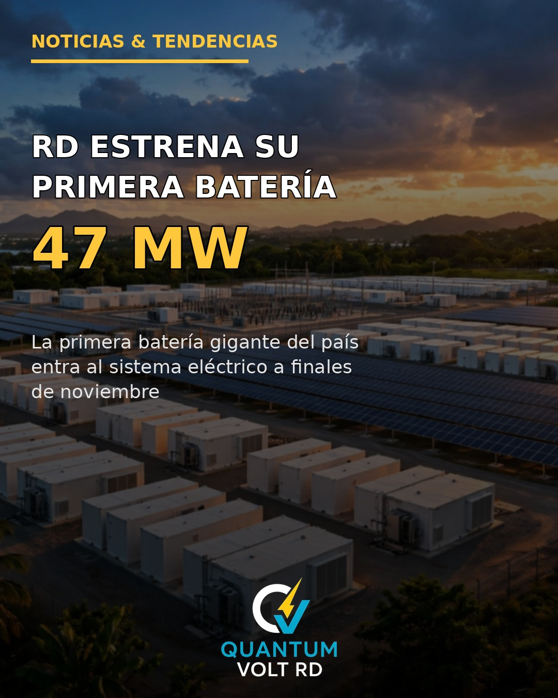

Noticia · 20 de noviembre de 2026
RD estrena su primera batería gigante: 47 MW entran al sistema
20 de noviembre de 2026 · Energía solar · República Dominicana

La República Dominicana contará a finales de noviembre de 2026 con su primer sistema de almacenamiento en baterías (BESS): 47 MW que entran al Sistema Eléctrico Nacional Interconectado (SENI). Lo anunció el ministro de Energía y Minas, Joel Santos, el 18 de noviembre.
Refuerzo justo en la hora pico, de 7:00 a 11:00 de la noche
El objetivo es fortalecer el suministro en el horario de mayor demanda, de 7:00 a 11:00 de la noche: «Eso le dará mucho más estabilidad al sistema», dijo el ministro. Antes de concluir 2026 se integrarán otros dos proyectos, y la incorporación seguirá durante todo 2027, con la meta de llegar a al menos 800 MW en baterías antes de 2028.
La solar ya es el 27% de la generación del país
Las renovables representan alrededor del 27% de la generación nacional (solar, eólica, biomasa e hidroeléctricas). La batería es lo que faltaba para que esa energía del sol no se pierda al caer la tarde, sino que trabaje de noche. Además, hay unos USD 750 millones programados para 2027 y 2028 en distribución eléctrica.
Qué significa para tu casa
Lo mismo que pasa en el país pasa en tu casa: panel + batería te dan luz propia en la noche y en el apagón, justo en esa hora pico. En Quantum Volt RD instalamos tu sistema solar con baterías, dimensionado para tu casa o negocio, para que un apagón no te detenga.
Cotiza tu sistema solar por WhatsApp: 829-778-9089Fuentes
- Presidencia de la República Dominicana, 18 de noviembre de 2026: República Dominicana estrenará su primer sistema de almacenamiento en baterías a finales de noviembre
- Acento, 18 de noviembre de 2026: República Dominicana incorporará su primer sistema de almacenamiento en baterías en noviembre
← Volver a la página principal de Quantum Volt RD · Ver todas las noticias →